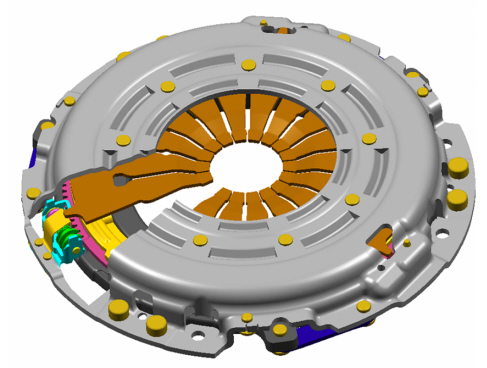
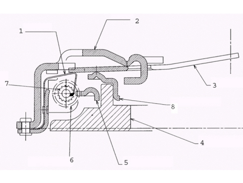
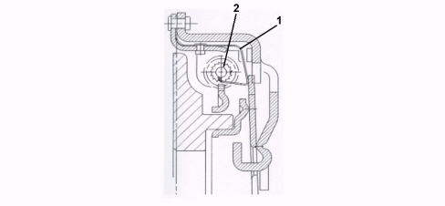
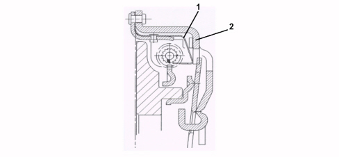
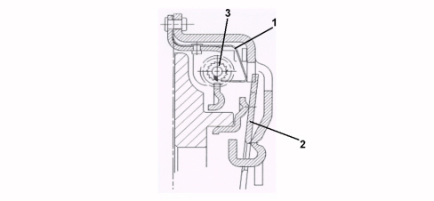
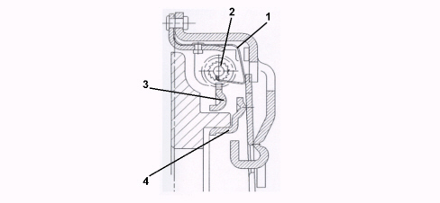
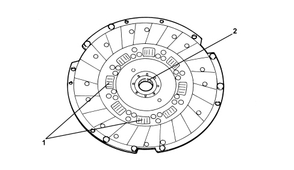

INTRODUCTION - CLUTCH
- Path
- Descriptions > 18 CLUTCH UNIT > INTRODUCTION - CLUTCH
- Kind
- system description
- Applies to
- engines: 1.9 JTD 8v, 1.9 JTD 16v; all production periods
- Interactive page
- https://sloeber94.github.io/elrnDB-fCrm/en/#/194002214
Applies to: engines: 1.9 JTD 8v, 1.9 JTD 16v; all production periods
CLUTCH ASSEMBLY
The clutch-flywheel system on the 1.9 JTD engine is supplied by VALEO and has the following specifications:
Dry, single plate type clutch with hydraulically operated thrust release, coaxial internal actuator; outer diameter 240 mm; spring loading 640 daN.

"sat" disc wear recovery system (self adjusting technology)
The clutch supplied by Valeo has a mechanical device for recovering friction disc wear known as "SAT" which exploits the rotation principle between the two rings with inclined adjacent planes. The components for this system are illustrated in the section below.

1. Toothed plate
2. Clutch cover
3. Diaphragm spring
4. Pressure plate
5. Toothed sector with inclined plane
6. Worm screw
7. Gear
8. Thrust ramp with inclined plane
SYSTEM OPERATING PRINCIPLE
ENGAGEMENT WHEN DISC IS NEW: the toothed plate (1) is pressed against the top of the gear tooth (2);

RELEASE WHEN DISC IS NEW: the toothed plate (1) rests on the clip incorporated in the cover (2); in this position it is still in contact with the previous tooth;

ENGAGEMENT WHEN DISC IS USED: the toothed plate (1) presses the tooth for the gear (2) with a value corresponding to the wear of the friction disc;

RELEASE WHEN DISC IS USED: the toothed plate (1) being able to move because the diaphragm spring (2) is released, slides on the next gear tooth (3); it is now in a position to rotate the gear for the next engagement operation;

NEXT ENGAGEMENT: the toothed plate (1) presses the tooth for a distance corresponding to the height of the tooth; this operation rotates the gear (2) and, at the same time, the toothed sector (3) and consequently the thrust ramp (4), by means of the system of inclined planes; at the end of the engagement the ramp is moved axially by the exact value of the wear to be recovered.

Friction driven disc
The friction disc contains a spring system which acts as flexible coupling; the connection betwen the propeller shaft and the gearbox is made through a splined hub. The side facing the flywheel is shown in the photo.

1. Flexible coupling springs
2. Splined hub